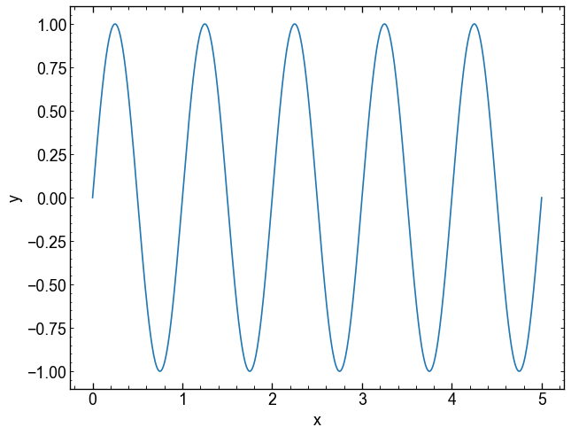
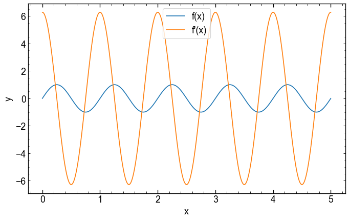
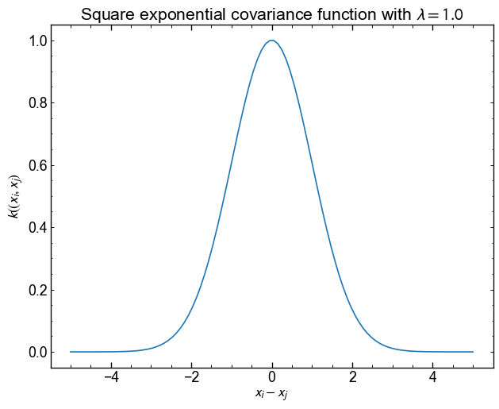
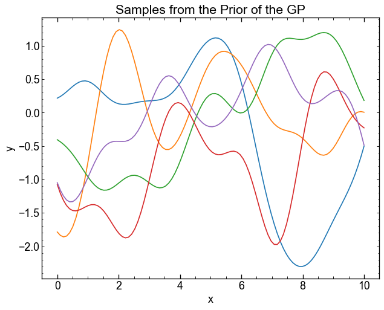
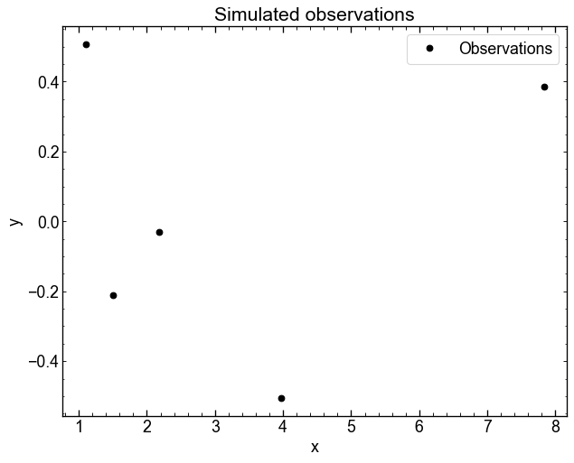

Code
import jax
import jax.numpy as jnp
jax.config.update("jax_enable_x64", True)
a = jnp.arange(5.0)
print("Test")
print(a)
print(a.dtype)Test
[0. 1. 2. 3. 4.]
float64The package that we will use for GPS, tinygp, uses JAX. Jax is a package for machine learning, a bit like Pytorch and Tensorflow, which allows you to take advantage of GPUs and TPUs.
We will cover this type of package and their advantages during lessons on neural networks. In addition to the calculation on GPUs, here are some other advantages of Jax:
jax.numpy)jax.grad)jax.jit)jax.vmap)Although Jax allows you to use GPUs, it also works on CPUs. So you can install Jax on your computer following the instructions d’installation.
To offer the features described above, JAX works differently from NUMPY in some respects. These differences are presented in the tutorial, but here are the main lines:
a[0]=1.0 becomes a=a.at[0].set(1.0)(🔪 JAX - The Sharp Bits 🔪)Let’s start by defining a table with Jax and checking that the Double precision is well activated.
Test
[0. 1. 2. 3. 4.]
float64We can see that modifying the table in place gives an error.
The following error occurred!
JAX arrays are immutable and do not support in-place item assignment. Instead of x[idx] = y, use x = x.at[idx].set(y) or another .at[] method: https://docs.jax.dev/en/latest/_autosummary/jax.numpy.ndarray.at.htmlBut that the property of at works as expected:
As with Numpy, you can define a function and display it in a graphic

But as the function uses jax.numpy, you can get a gradient with jax.grad.
The jax.grad function only accepts functions that return a scalar.
It is here that the JAX.VMAP function becomes useful: it allows us to apply our gradient function on several x.
sinus_grad = jax.grad(sinus) # Grad is done on the 1st argument by default
# We must tell VMAP on which arguments to operate:
# - axis 0 of the first argument
# - No axis of the 2nd argument
yp = jax.vmap(sinus_grad, in_axes=(0, None))(x, params)
plt.figure(figsize=(10, 6))
plt.plot(x, y, label="f(x)")
plt.plot(x, yp,label="f'(x)")
plt.xlabel("x")
plt.ylabel("y")
plt.legend()
plt.show()
We can also create a compiled version of our function with jax.jit.
During the first assessment, the function will be compiled and will be faster the following times.
You can use %timeit to test acceleration.
(Here, block_Until_READ() only ensures that JAX does not accelerate the evaluation with the dispatch asynchronous).
If we use jit, we can speed up the function.
In this case, the function is rather simple and the time saved is not huge. On the other hand, the more complex our models, the useful the Jit compilation.
Jax.jit can also be used as a decorator on our function, for example
These two methods are equivalent.
With JAX, random numbers are generated a little differently from Numpy. To operate on “pure” functions, the state of the random generator must be given in to the functions. We do this using a “key”, which can be divided as many times as necessary to generate new numbers.
However, a given key always generates the same value!!
-1.278167993100484
-1.278167993100484To get new numbers, the key must be divided into a new key and a subkey.
We use the subkey to generate random numbers. The new key will be re-divided further in our code if necessary.
0.5328411343779211
0.33692105877614514
-1.152171978695814
-0.1276830979195066Exercise: Generate numbers taken from a normal 2D distribution centered at [0, 5] with the diagonal covariance matrix below. Display the samples on a 2D histogram (Plt.hist2d orCorner.corner).
\[ C = \begin{matrix} 1 & 0 \\ 0 & 2 \end{matrix} \]
(Multidimensional normal distribution is jax.random.multivariat_normal in JAX equivalent to Numpy).
So! The above section covered the main things to know before using Jax.
As seen in class, Gaussian processes (GPS) are mathematically quite simple.
It is therefore possible to implement them with NUMPY orJAX.NUMPY.
The equations we need are given to slides 12, 15 and 23.
Let’s start by defining a square exponential covariance (kernel).
\[ K_{\mathrm{se}} (x_i, x_j, \{\lambda\}) = \exp {\left (- \frac{1}{2\lambda^2} \left | x_i - x_j \right |^2 \right)} \]
Implement the equation above and display the result for $ x_i $ between -5 and 5. Keep \(x_j\) fixed at 0.
Use \(\lambda = 1.0\) as the scale

The function tells us that the points being close to each other are very correlated, but that beyond $ | x_i - x_j | > $ 4, the correlation is almost 0.
This correlation can be visualized in another way, using two vectors and looking at the point-point distance.
As a GP is a Gaussian distribution on the functions, you can use the covariance matrix Kmat to generate evaluations \(\mathbf{y} = F(\mathbf{x})\) taken from this distribution. Our mean function in this case will simply be a constant around 0.
Use jax.random.multivariat_normal() to generate 5 samples of a distribution with an average of 0 and a covariance kmat.
Use the method="svd" argument to avoid digital errors.
The normal distribution at 100 dimension therefore returns us 5 vectors $ y $ evaluated at the values of our function. They can be displayed on the same graphic to see what type of functions the GP returns.

These samples are taken from the prior distribution of the GP. They are therefore not conditioned on any data, which makes them of not much use in practice.
We can simulate a few data points and use the equations of page 23 to obtain the posterior distribution of the GP conditioned on these observations.
key, subkey1, subkey2 = jax.random.split(key, num=3)
x = jax.random.uniform(subkey1, shape=5, minval=0.5, maxval=9.0)
y = jax.random.normal(subkey2, shape=x.shape)
xt = jnp.linspace(0, 10, num=100)
plt.plot(x, y, "ko", label="Observations")
plt.xlabel("x")
plt.ylabel("y")
plt.title("Simulated observations")
plt.legend()
plt.show()
Now that we have observations, we can generate samples from the posterior (conditional) distribution of the GP.
In these equations \(x\) and \(y\) denote observations vectors.
$x_$ is the point vector where we want to predict \(y_\star\) (xt in the code).
Conditional distribution is given to page 23 of slides. We must first assess three covariance matrices
\[ K = k(x, x), k_\star = k(x, x_\star), k_{\star\star} = k(x_\star, x_\star). \]
The conditional distribution of a GP is also a multidimensional Gaussian distribution, but its mean and its covariance are different from the a priori distribution:
\[ p(y_{\star}|y) = \mathcal{N}(f_\star, C_\star) \]
where the mean is
\[ f_\star = m_\star + K_{\star}^T K^{-1} (y - m) \]
and covariance
\[ C_\star = K_{\star\star} + K_{\star}^T K^{-1} K_{\star}. \]
Some hints (click to display) </ Summary>
kernel (x [:, none], x [none ,:]) to easily vectorize the calculation of the covariance matrixJNP.linalg and jnp.diac and the matrical multiplication operation command @ will be useful.If you finish in advance, here are some suggestions to explore the GPS a little in more detail. Nothing is compulsory.
Some suggestions:
It is possible that you get digital instability in the first 4 questions. Do not waste too much time on this if this is the case. This is, among other things, why we will use TinyGP during the next course.